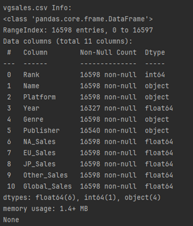

Exploratory Data Analysis of Video Game Sales
Table of Contents
Task
This project is to conduct an exploratory analysis on a dataset of video game releases from 1980 to 2020. This Exploratory Data Analysis (EDA) aims to decode the intricate patterns within sales data, contributing to a nuanced understanding of the gaming market and facilitating data-driven decision-making in this dynamic and influential industry.
The original data contained 16,600 data entries and was obtained from Kaggle. For the purposes of this project, the initial .csv file underwent division into two distinct files: one housing sales data ("vgsales"), and the other encompassing review data ("vgsalesreviews").
My responsibilities include exploring data structure, calculating descriptive statistics, analyzing temporal trends, examining variable distributions, assessing correlations, and generating insights. I will be highlighting key findings and trends to inform future decision-making processes.
Tools Utilised


Background
Video games, a cultural phenomenon since the late 20th century, have evolved from simple pixelated graphics to immersive, high-tech experiences. Their impact extends beyond entertainment, influencing social interactions, education, and even shaping economies and careers. As a data analyst, delving into the vast realm of video game sales offers insights into consumer behaviors, industry trends, and the ever-evolving landscape of gaming. Examining the sales data provides a unique lens into how gaming profits compare to other sectors within the broader entertainment market, shedding light on the economic significance of this thriving and evolving industry.
In the expansive world of video games, key players, including publishers and developers, play pivotal roles in shaping the industry. Established names like Electronic Arts (EA), Activision Blizzard, and Ubisoft wield significant influence, driving innovation and defining gaming trends. Meanwhile, renowned developers like Nintendo, known for iconic franchises such as Super Mario and The Legend of Zelda, contribute to the industry's creative landscape.
Dynamic collaboration between publishers, developers, and platform holders forms a complex ecosystem that influences game releases, technological advancements, and market dynamics. As part of a data analyst's exploration, understanding the contributions and strategies of these key players becomes essential for comprehending the intricate patterns within the video game sales dataset.
Data Cleaning, Merging and Integration
1. Summarising data and identifying any invalid entries within both datasets
- From both datasets, using Excel's filter function, a total of 540 data entries have "N/A" in the "Release Year" column and 2425 data entries have "tbd" present in the "User_Score" column.
- A new header was added called "Number of Blanks" in Excel. Using Excel's "=COUNTBLANK" function, across both datasets and 33,320 data entries, 2 blank entries were found in the "Names" section. These were removed from the dataset.
- If the data is from a stakeholder, I'd seek clarification and discuss with the team and stakeholder. Collaboratively deciding the best approach for effective analysis, ensuring informed decisions based on the available dataset.
Additionally, a Python script was developed to summarises key insights for each heading in "vgsales" and "vgsalesreviews" files, offering valuable information on the data types for each header.

2. Addressing the blank data entries using SQL
- Blank cells in the “vgsalesreviews” table were identified and nullified, focusing on critical columns such as “year_of_release”, “critic_score”, “critic_count”, “user_score”, and “user_count”.
- Columns in the “vgsalesreviews” table were converted from "Text" to specific data fields, enhancing the data's accuracy and usability.

3. Dataset merging and exporting using SQL
- The two tables were then merged into a new table named “vgsalesfull” using a left join on the game names.
- The “vgsalesfull” table was exported as a CSV file for further analysis.
Key Findings and Visualizations
Analysis of the best selling video games across each region by genre
- Utilizing SQL, an analysis of total global, North American, European, Japanese, and "Other" region sales was conducted across various genres.
- The findings revealed that the action genre holds the highest global sales, trailed by sports and shooter games.
- A potential explanation for the notable dominance of action games in sales is the extensive variety within the genre.
- The robust sales of sports and shooter games can be attributed to the consistent annual releases of popular franchises in these genres.
Analysis of the most actively-selling publishers
- Across the dataset, publishers released an average of 20 games. Namco Bandai Games led with 774 releases, followed by Nintendo and Konami.

Analysis of the highest selling video games
- Common Table Expressions (CTEs) were leveraged on SQL to identify and present the top 3 games from each genre based on global sales.
- Data visualizations were made using Tableau to provide insights on some of the sales data across different genres and platforms, and the total number of games released within a user-set time period. Additional filters for both genre and release years were added.
- Demonstrating substantial sales figures, the DS and PS2 led in game releases. Meanwhile, Xbox 360, PS3, and PS2 showcased parallel global sales, signifying their joint market dominance in distinct eras
- Notably, action game sales soared on home consoles like the PS2, Xbox 360, and PS3, requiring external displays. In contrast, handheld consoles like the DS and PSP saw a prevalence of miscellaneous and puzzle games in their releases.
- This trend is likely influenced by the handheld consoles' target audience, catering to younger individuals and those with on-the-go lifestyles, who prefer shorter gaming sessions.

- A Python script was developed to visualize the top games' sales by region, demonstrating the global sales across “North America”, “Europe”, “Japan”, and “Other” regions.
- North America consistently led in overall sales compared to Europe and Japan, attributed to the larger U.S. market.
- Examining the data visualizations, the peak years for top-selling games spanned from 2002 to 2011. This surge can be attributed to the concurrent launches of the PS2 and DS, recognized as the leading consoles with the highest game sales. Notably, the graphical representations reveal a predominant trend in sales favoring portable devices, including the Nintendo DS, PlayStation Portable (PSP), and GameBoy Advance (GBA). Console sales also constituted a substantial share, prominently driven by the Nintendo Wii and Sony Playstation 2.
- Conversely, the least successful consoles emerged during the period from 1980 to 1990. This can be attributed to the early stage of video game console introduction, lacking the demand and profitability observed in 2023. Additionally, obtaining information about these older games may pose a challenge, contributing to their lower sales figures.
- Nintendo consoles has exhibited unwavering dominance from 1980, with the release of the Nintendo Entertainment System (NES) in 1983, solidifying their position as industry leaders. Their enduring influence persisted through various gaming eras, making them a pivotal force in the evolution of video game consoles.

Conclusion
This portfolio showcases diverse analytical skills; utilizing Excel, Python and SQL for data validation and cleaning, and SQL for in-depth sales analysis by region, genre, and publishers. Tableau and Python were employed to visualise global trends and highlight peak years.
The analysis uncovered action games as global bestsellers, driven by genre diversity, while sports and shooter games thrived on franchise consistency. Noteworthy publisher insights revealed Namco Bandai Games leading in releases. Tableau visualizations spotlighted DS and PS2 dominance, with Nintendo's sustained influence evident. The Python script showcased North America's gaming market leadership and emphasized the surge in top-selling games from 2002 to 2011, and Nintendo's enduring dominance since 1983 emphasises their pivotal role in shaping the gaming industry.